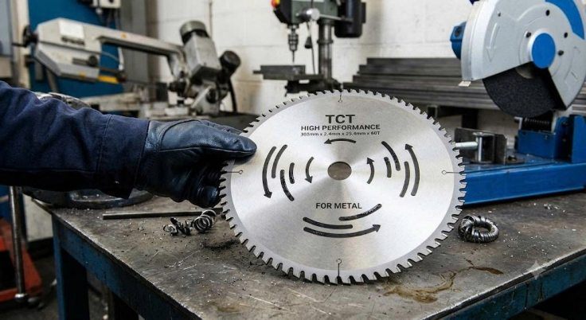

Máy cắt bàn là thiết bị được sử dụng phổ biến trong các xưởng cơ khí, phục vụ quá trình cắt kim loại, thanh thép, ống và nhiều loại vật liệu khác. Tuy nhiên, chất lượng đường cắt không chỉ phụ thuộc vào công suất máy mà còn liên quan đến cách cố định vật liệu, lựa chọn lưỡi cắt và kỹ thuật vận hành của người lao động.

Quá trình gia công, máy cắt bàn giúp thực hiện các thao tác cắt vật liệu theo kích thước yêu cầu, đặc biệt đối với những chi tiết có hình dạng thanh dài hoặc cần cắt lặp lại nhiều lần. Thiết bị thường được sử dụng trong chế tạo kết cấu thép, gia công cơ khí dân dụng, sản xuất khung kim loại và hoạt động sửa chữa.
Độ chính xác của đường cắt phụ thuộc đáng kể vào khâu chuẩn bị trước khi vận hành. Vật liệu cần được đo, đánh dấu kích thước và cố định chắc chắn trên bàn máy. Nếu phôi bị xê dịch trong quá trình cắt, bề mặt có thể không đồng đều, sai lệch kích thước hoặc gây rung lắc thiết bị.

Bên cạnh đó, việc lựa chọn lưỡi cắt cần căn cứ vào loại vật liệu, đường kính, tốc độ quay cho phép và thông số kỹ thuật của máy. Lưỡi cắt bị nứt, mẻ hoặc xuống cấp không chỉ làm giảm hiệu quả gia công mà còn tiềm ẩn nguy cơ vỡ trong quá trình sử dụng.
Khâu vận hành, người lao động cần tuân thủ đúng quy trình kỹ thuật và không tác động lực quá mức lên lưỡi cắt. Máy cần được đặt trên bề mặt ổn định, bộ phận che chắn được lắp đầy đủ và khu vực làm việc được bố trí thông thoáng, hạn chế vật liệu dễ cháy gần vị trí phát sinh tia lửa.
Một yêu cầu quan trọng khác là kiểm tra thiết bị trước và sau mỗi ca làm việc. Người vận hành cần chú ý đến nguồn điện, hệ thống công tắc, bộ phận cố định phôi và tình trạng lưỡi cắt. Khi thay thế phụ kiện hoặc xử lý sự cố, cần ngắt nguồn điện và chờ các bộ phận chuyển động dừng hoàn toàn.
Do quá trình cắt kim loại thường phát sinh tia lửa, bụi và tiếng ồn, người lao động cần sử dụng kính bảo hộ, thiết bị bảo vệ thính giác và các phương tiện bảo hộ phù hợp. Đồng thời, không mặc trang phục rộng, để tóc hoặc vật dụng cá nhân gần bộ phận quay của máy.
Vận hành máy cắt bàn đúng kỹ thuật là yếu tố quan trọng để kiểm soát sai số gia công, hạn chế hao hụt vật liệu và phòng ngừa tai nạn lao động. Việc kết hợp kiểm tra thiết bị, lựa chọn lưỡi cắt phù hợp và tuân thủ quy trình an toàn góp phần duy trì chất lượng sản phẩm cũng như hiệu quả hoạt động tại các xưởng cơ khí.